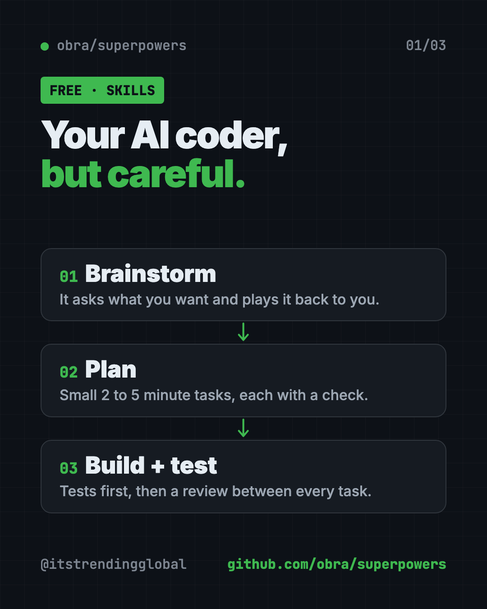
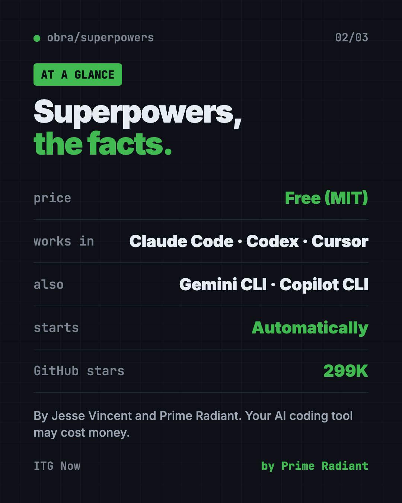
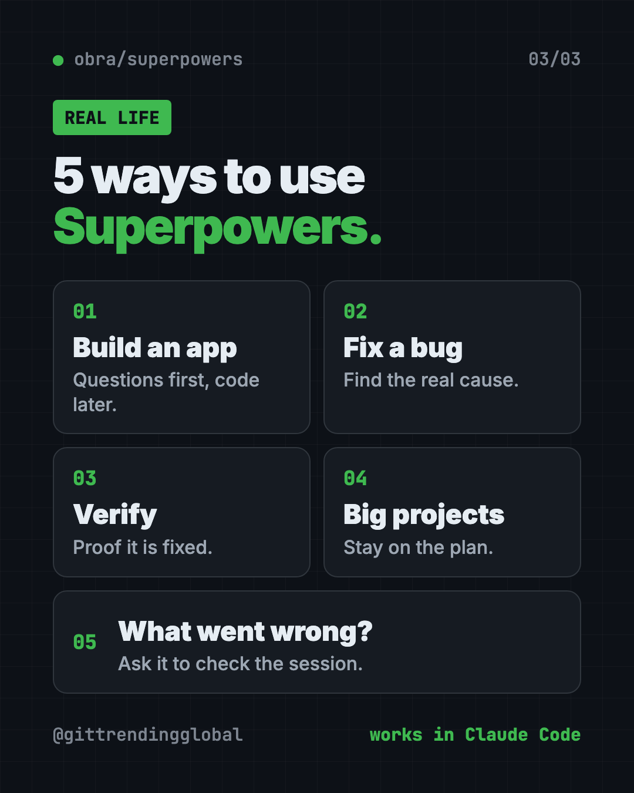

Superpowers: Free Claude Code Skills That Plan First (2026)
- Free AI tools
- Published 2026-10-15
- 7 min read
- Updated 2026-10-16
- Stars 299K
- License MIT
- By the It's Trending Global team
Superpowers is a set of free Claude Code skills that make your AI coder ask questions, write a plan, test and review its work before it calls a job done.
Superpowers is a set of free Claude Code skills that make your AI coder slow down and think first. Before writing any code, it asks what you really want, shows you a design, writes a plan, and then tests its own work.
AI coding helpers are fast. Sometimes too fast. You ask for an app and they start typing right away, guessing what you meant. If you're not a programmer, you may not spot a bad guess until something breaks. Superpowers gives the AI a careful engineer's habits. It works in Codex, Cursor, Gemini CLI and many other tools too.
Key takeaways
- Free and open source. MIT license, about 299K stars on GitHub.
- It asks before it builds. A brainstorming step draws out what you want and plays it back to you.
- It plans in small steps. Work is split into tasks of 2 to 5 minutes, each with checks.
- It tests and reviews itself. Tests come first, and a review runs between tasks.
- It starts on its own. The skills trigger automatically. No special commands to remember.
What is Superpowers?
Superpowers is a bundle of "skills" for AI coding helpers. A skill is a set of written instructions the AI follows for one kind of job. Together, these skills form a full way of working.
The README calls it "a complete software development methodology for your coding agents." In plain words: it's a rulebook that turns a fast, eager AI into a careful one.
It's made by Jesse Vincent and the team at Prime Radiant. The README notes it's common for the AI "to work autonomously for a couple hours at a time without deviating from the plan you put together."
How do these free Claude Code skills work?
Here is the basic flow from the README, in plain words:
- Brainstorm. Before building anything, the AI asks questions to learn what you want and why. Then it repeats it back so you can correct it.
- Safe copy. After you approve, it sets up a separate workspace so your main project stays clean.
- Plan. It breaks the work into bite-sized tasks, each with exact steps and a way to check it.
- Build. It works through the plan, often handing each task to a fresh helper agent with a review after each one.
- Test first. It writes a test that fails, then writes just enough code to make it pass.
- Review. Between tasks, it checks work against the plan. Serious problems stop progress.
- Finish. When done, it checks the tests and asks what you want to do with the work.

How to use Superpowers (real examples)
- Build a simple app without chaos. Say "Let's make a to-do list app." Instead of code, you get questions first. Answer them, approve the design, then say "go."
- Fix a stubborn bug. The systematic-debugging skill uses a 4-phase process to find the real cause, not just the symptom.
- Make sure a fix is real. The verification skill checks that something is fixed before the AI says it's done.
- Run bigger projects. For a larger feature, the plan keeps the AI on track while it works for a long stretch.
- Find out what went wrong. If a session acts up, ask "figure out what went wrong with superpowers in this session." It reads the session and reports back with evidence.
💡 Tip: Answer the brainstorming questions properly. The better your answers, the better the plan, and the less you'll fix later.
Which AI tools does Superpowers work with?
The README has install steps for a long list of AI coding tools:
- Claude Code
- Codex (app and command line)
- Cursor
- Gemini CLI
- GitHub Copilot CLI
- OpenCode, Antigravity, Devin CLI, Factory Droid, Grok Build CLI, Kimi Code, Pi, Qwen Code, Muse
- Hermes Agent
If you use more than one tool, you install Superpowers separately in each.
Superpowers at a glance
| Price | Free (your AI coding tool may cost money) |
| Works offline | No. It runs inside an AI tool that needs the internet |
| Works with | Claude Code, Codex, Cursor, Gemini CLI, Copilot CLI and more |
| License | MIT (open source) |
| Made by | Jesse Vincent and Prime Radiant |
| Best for | Anyone who builds with AI and wants fewer surprises |
How to install Superpowers in Claude Code
Superpowers is in Anthropic's official Claude plugin marketplace. Open Claude Code, then copy and paste this:
/plugin install superpowers@claude-plugins-official
That's it. To check it works, start a fresh session and ask it to build something small. The brainstorming skill should kick in before any code is written.
Install in Codex, Cursor or Gemini CLI
Codex app: click Plugins in the sidebar. Find Superpowers in the Coding section. Click the + and follow the prompts.
Codex CLI: type /plugins, search for superpowers, then pick Install Plugin.
Cursor: in Cursor's agent chat, copy and paste this:
/add-plugin superpowers
Gemini CLI: copy and paste this:
gemini extensions install https://github.com/obra/superpowers
The README has steps for every other tool on the list.
⚠️ Heads up: Superpowers makes the AI ask questions and plan first. That adds a few minutes at the start. It's on purpose. You trade a little time now for fewer mistakes later.

Let Claude or Codex set it up for you
Claude Code and OpenAI Codex are AI helpers that can run tasks on your computer. With Superpowers, you mostly just install the plugin and start talking. But you can ask your AI helper to walk you through it.
Copy and paste this:
Please help me set up Superpowers from github.com/obra/superpowers.
1. Tell me which AI coding tool I'm using right now.
2. Give me the exact install step from the README for that tool.
3. After I install it, explain in plain words what brainstorming,
writing-plans and test-driven-development will do for me.
4. Start a tiny test project so I can see the skills kick in.
Then try asking:
Let's build a simple habit tracker web page. Use Superpowers and ask me questions first.
This button stopped working. Use systematic debugging to find the real cause.
Figure out what went wrong with superpowers in this session.

Is Superpowers free? What about telemetry?
Yes, Superpowers is free under the MIT license. The AI coding tool you use may need its own paid plan.
One small note. An optional visual feature in brainstorming loads a logo from the makers' website. That tells them which version you use. The README says it does not include your project, prompts or coding agent. You can turn it off by setting SUPERPOWERS_DISABLE_TELEMETRY to true. It also respects Claude Code's own telemetry opt-outs.
The makers also offer paid support for companies. The README does not list prices.
Our take
Superpowers fixes the most common problem with AI coding: rushing. If you want free Claude Code skills that make your AI act like a careful engineer, it's an easy place to start.
What we like:
- The AI asks before it guesses.
- Plans are small and easy to follow.
- Tests and reviews are built in, not optional.
- Works across a long list of AI coding tools.
- Skills turn on by themselves.
What to watch for:
- Planning adds time up front, even for small changes.
- You still need a paid AI coding tool for heavy use.
- It's aimed at building software, not everyday tasks.
Want more skill packs? Read about Matt Pocock's skills or gstack, a skill set for AI coding. Superpowers also made our best GitHub repos of January 2026.
FAQ
Is Superpowers free?
Yes. Superpowers is free and open source under the MIT license. The AI coding tool you run it in may cost money.
How do I install Superpowers in Claude Code?
Open Claude Code and run /plugin install superpowers@claude-plugins-official. It's in Anthropic's official plugin marketplace.
Does Superpowers work with Codex and Cursor?
Yes. In the Codex app, add it from Plugins in the sidebar. In Cursor, type /add-plugin superpowers in the agent chat.
Do I need to type special commands to use Superpowers?
No. The skills trigger on their own. When you ask to build something, brainstorming starts automatically.
Is Superpowers good for non-programmers?
It helps. It makes the AI ask questions, plan, and test before saying it's done. That means fewer silent mistakes for people who can't read the code.
Get Superpowers: github.com/obra/superpowers
Follow ITG Now on Instagram for one free, useful tool every day.
Keep reading

DBX: Free Database Client for 100+ Databases, With AI (2026)
DBX is a free database client that opens 100+ kinds of databases in a 25 MB app. Its AI helper turns plain English into database queries for you.

PureMac: Free CleanMyMac Alternative, No Subscription
PureMac is a free CleanMyMac alternative. It clears junk, fully uninstalls apps and finds duplicates, with no subscription, no tracking and no scare tactics.

Strata: Run Big Local AI on a Gaming PC, Free
Strata is a free installer that runs big, private local AI on a gaming PC. It sets up a large Qwen model, so your chats never leave your computer.